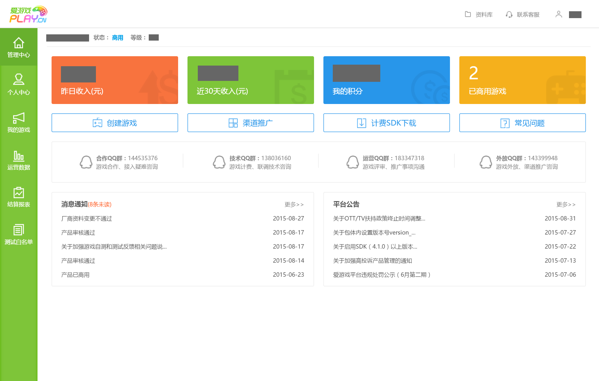
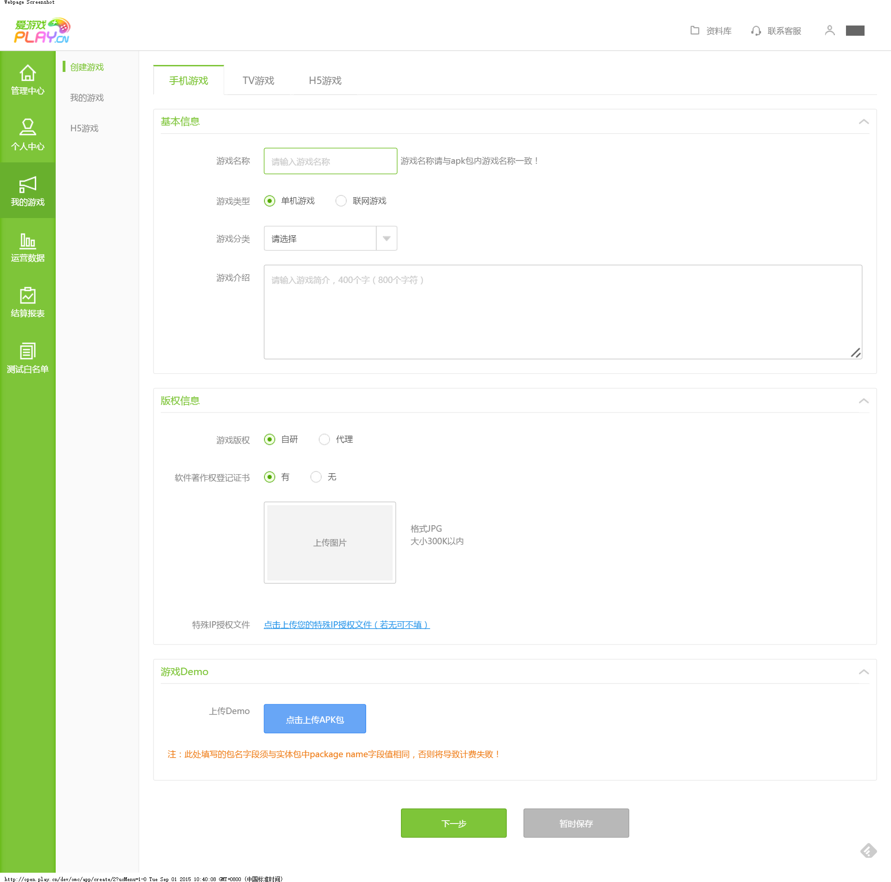
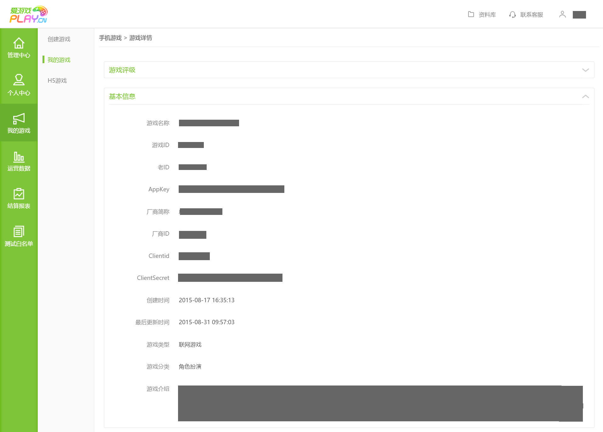

爱游戏官方后台地址：http://open.play.cn/dev/
西瓜SDK所需的参数client_secret、client_id、APPKEY在爱游戏后台索取。
获取参数步骤：1. 注册开发者账号；
2. 登录爱游戏渠道后台，点击“管理中心”，进入该页面，然后点击“创建游戏”；

3. 填写相关信息，点击下一步；

4. 获取到的游戏ID、APP KEY、ClientSecret如下所示。
